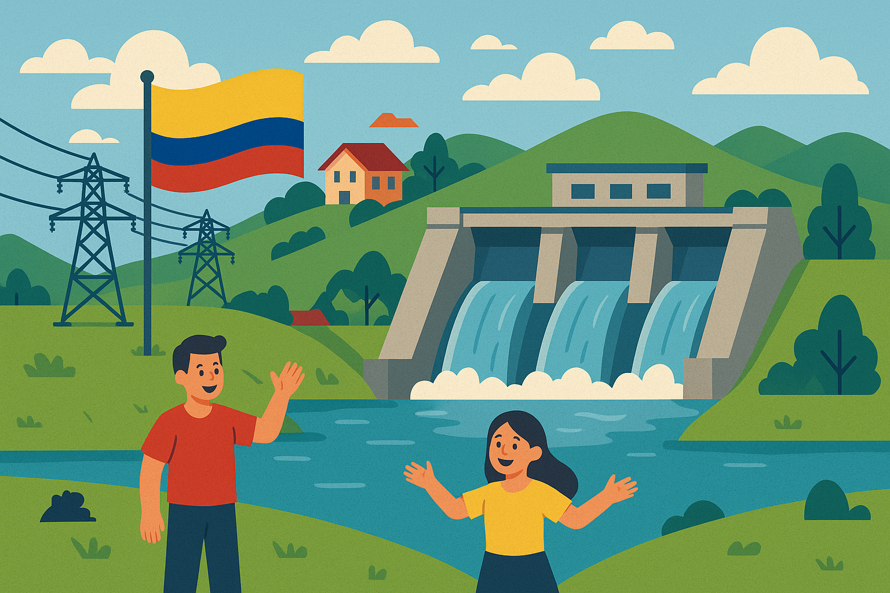

.png)
EPM e ISAGEN son empresas clave en la generación hidroeléctrica en Colombia. EPM, con 25 centrales y el importante proyecto Hidroituango (actualmente aportando 1,200 MW y en expansión), tiene una posición dominante. ISAGEN opera centrales significativas como San Carlos, Sogamoso y Miel I, y está desarrollando nuevos proyectos, con una estrategia de generación 100% renovable que incluye hidroeléctrica, eólica y solar. Ambas empresas son cruciales para la matriz energética renovable del país.
Adicionalmente hay empresas como Celsia y Enel que trabajan principalmente con esta clase energía.
Energía hidroeléctrica en Colombia
Colombia, favorecida por su privilegiada geografía y la abundancia de recursos hídricos, ha encontrado en la energía hidroeléctrica una de las principales fuentes para impulsar su desarrollo energético a lo largo de su historia. Desde hace décadas, esta forma de energía renovable no solo ha contribuido al crecimiento económico y social del país, sino que también ha permitido construir un sistema energético más limpio en comparación con otras fuentes tradicionales.
Actualmente, la hidroelectricidad continúa siendo la columna vertebral del suministro eléctrico nacional, representando entre el 65 % y el 70 % de la electricidad consumida en el país. Esta amplia participación evidencia la importancia estratégica que la generación hidroeléctrica mantiene dentro de la matriz energética colombiana.
Con una capacidad instalada considerable, Colombia se posiciona como uno de los líderes en producción hidroeléctrica en Sudamérica, demostrando su potencial y compromiso con el aprovechamiento de fuentes sostenibles. Además, el aumento progresivo de esta capacidad a lo largo del tiempo refleja una apuesta continua por la expansión y modernización del sector, impulsada tanto por inversiones públicas como privadas.
En este marco, el Plan Energético Nacional (PEN) establece los objetivos y estrategias para diversificar la matriz energética del país, donde la energía hidroeléctrica juega un papel fundamental. Con una visión proyectada hasta 2050, el PEN integra a la hidroelectricidad como un componente clave para garantizar una base estable que permita la incorporación de otras fuentes de energía renovable, más variables y emergentes. De esta manera, Colombia busca fortalecer su seguridad energética, fomentar el desarrollo sostenible y avanzar de manera ordenada hacia una transición energética más limpia y equilibrada.

Principales actores en la generación hidroeléctrica
Pilares energéticos: Las hidroeléctricas más importantes de Colombia
Colombia cuenta con una destacada infraestructura hidroeléctrica, a continuación, se presentan algunas de las principales centrales hidroeléctricas, destacando su capacidad instalada y ubicación:
Haz clic en el botón para conocer más detalles:
Colombia, favorecida por su privilegiada geografía y la abundancia de recursos hídricos, ha encontrado en la energía hidroeléctrica una de las principales fuentes para impulsar su desarrollo energético a lo largo de su historia. Desde hace décadas, esta forma de energía renovable no solo ha contribuido al crecimiento económico y social del país, sino que también ha permitido construir un sistema energético más limpio en comparación con otras fuentes tradicionales.
Actualmente, la hidroelectricidad continúa siendo la columna vertebral del suministro eléctrico nacional, representando entre el 65 % y el 70 % de la electricidad consumida en el país. Esta amplia participación evidencia la importancia estratégica que la generación hidroeléctrica mantiene dentro de la matriz energética colombiana.
Con una capacidad instalada considerable, Colombia se posiciona como uno de los líderes en producción hidroeléctrica en Sudamérica, demostrando su potencial y compromiso con el aprovechamiento de fuentes sostenibles. Además, el aumento progresivo de esta capacidad a lo largo del tiempo refleja una apuesta continua por la expansión y modernización del sector, impulsada tanto por inversiones públicas como privadas.
En este marco, el Plan Energético Nacional (PEN) establece los objetivos y estrategias para diversificar la matriz energética del país, donde la energía hidroeléctrica juega un papel fundamental. Con una visión proyectada hasta 2050, el PEN integra a la hidroelectricidad como un componente clave para garantizar una base estable que permita la incorporación de otras fuentes de energía renovable, más variables y emergentes. De esta manera, Colombia busca fortalecer su seguridad energética, fomentar el desarrollo sostenible y avanzar de manera ordenada hacia una transición energética más limpia y equilibrada.


Pilares energéticos: Las hidroeléctricas más importantes de Colombia
Colombia cuenta con una destacada infraestructura hidroeléctrica, a continuación, se presentan algunas de las principales centrales hidroeléctricas, destacando su capacidad instalada y ubicación:
Haz clic en el botón para conocer más detalles: